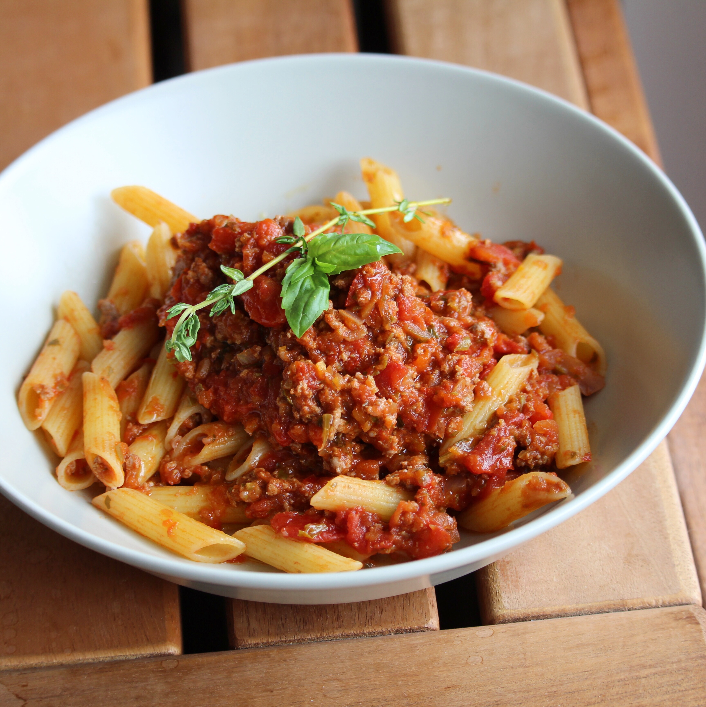

Cubanelle and Veal Bolognese

Description
"I have found myself making daily visits to Joseph's Classic Market these days and creating
new recipes. Not only do we have amazing markets here in Palm Beach Gardens but our farmers
markets are spectacular. I got 4 Cubanelle peppers and grilled 2 with our steak dinner. Looking
at the remaining 2, this dish came to me. Enjoy with your favorite pasta, spaghetti squash,
or sweet potato noodles."- Chef Cindy Anschuts Barbieri
Ingredients
- 2 tablespoons olive oil
- 2 Cubanelle peppers, chopped
- 2 cloves garlic, minced
- 1 pound ground veal
- 1/2 pound ground chuck
- 1 (28 ounce) can crushed tomatoes
- 1 tablespoon Italian seasoning
- 2 teaspoons sea salt
- 1 teaspoon ground black pepper
Steps
- Heat olive oil in large saucepan over medium heat
- Add Cubanelle peppers
- Cook and stir until softened, about 5 minutes
- Stir in garlic
- Cook until fragrant, about 30 seconds.
- Stir veal and chuck into the saucepan
- Cook, breaking up gently with a wooden spoon
until browned, about 10 minutes.
- Add crushed tomatoes, italian seasoning, salt
and pepper
- Bring sauce to a boil
- Reduce heat to low and simmer, covered, until
flavors combine, about 30 minutes.